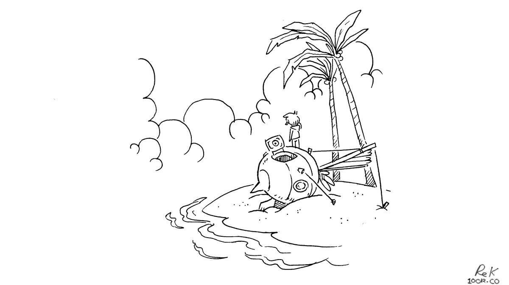

buying a sailboat
Why live on a boat?
1. The scenery changes everyday. If you're at anchor (see anchoring), the boat turns with the wind and you find yourself with a new view. If you don't like your neighbours, you have the option of hauling anchor and moving somewhere else. Having the freedom to move from place to place unhindered is wonderful.
2. You have a small ecological footprint. A boat is a gateway to self-reliance, with systems that are off the grid. With solar you consume no power, with wind propulsion there are no emissions, and because water is limited to your tanks, you are aware of how much you use and treat it like the precious resource that it is.
3. Low-cost home ownership. For a lot less money, you can own something and make it yours. You can anchor in downtown Vancouver for free, and share the same view as expensive condos lining the shore. Note that unlike a house, a boat will only decrease in value. See details on costs.
4. You can travel with your house. This is ideal for us, as creatives, to be able to go to different places while our cocoon stays the same.
what boat to buy

When we began looking for a sailboat to buy, we'd spend evenings browsing listings online, trying to figure out what sort of vessel best suited our needs and budget. Next are questions to ask yourself to help narrow your search:
1. Budget. What is the max amount of money you're willing to spend on a yacht. Be realistic, be cautious. Keep in mind that you will probably put a lot more money into it afterwards, even more if you plan to take it offshore. There is a yacht out there for any budget, but it's important to remember that the cheaper it is the more time and work you will have to put back into it. If time is a factor, you may prefer to pick a turn key yacht. If you have a limited budget, choosing a smaller boat is a smart move. Dock fees are priced on boat length, and every bit of gear gets pricier when sized up. 8-11 m is the sweet spot when it comes to boats.
2. Location. Where do you want to be cruising/living? Depending on your goals, it may be better to buy the boat in another country, although this comes with its own set of complications. If you don't have much experience, you're better off choosing a boat near your home grounds. If you do this, you won't have to deal with visas or importation fees. For example, we moved to Vancouver from Montreal to get pino, it was a good choice and still close to home.
3. Experience. If you're a novice, starting out smaller is a good idea. Smaller boats give more immediate feedback, you get a feel for the wind and are less likely to make costly mistakes on a larger yacht afterwards.
4. Comfort. A full keel boat is more comfortable on a passage, but harder to maneuver onto a dock and may need more wind to move. Full keel boats are designed for cruising, the gear onboard and the layout of the living space will reflect this. Boats with a deep fin keel and tall rig, like ours, maneuver well but are more aggressive, they heel a lot. You get used to it, but it may not be ideal for you.
5. Intentions. If you want to travel the world, your yacht needs to be strong to endure rough waters and strong winds. There is not just one type of blue water boat, you will have to familiarize yourself with the features required for offshore travel. For example, Sven Yrvind sailed to Cape Horn in a 6.1 m (20 ft) boat named Bris, and Capucine Trochet sailed Taratari, a sailboat made out of jute, across the Atlantic Ocean. We recommend reading Seaworthy Offshore Sailboat by John Vigor. See our resources for more book references.
so you found a boat
Visit the boat. Inspect every inch of it, and take plenty of photos and/or videos. Take notes, or record your conversations with the owner or inspector. There is too much to know and hardly enough time to absorb it all in one go, you'll be grateful to have the notes to refer to afterwards. If you know anyone with experience on boats, have them come with you, or show them the listing/photos afterwards and ask them what they think. If you think you've found a boat, make an offer. Usually, this is done through a sales agent.
If your offer is accepted, the next step is to have a survey of the boat done. The yacht is hauled out of the water, and checked by a marine surveyor. In turn, you receive a document with every detail of the boat, which includes photos and a list of items that need to be looked at/replaced. We found this document incredibly useful. To buy Pino Devine & I each got a 10,000$ bank loan. We had savings, but didn't want to be left with an empty account after the purchase. That proved to be wise, given the cost of everything marine. We made a plan then, to pay off the loan within 3 years, which amounted to payments of around 600$ a month. We paid it off earlier.
getting certified
You can get a boat without experience (like we did), but in Canada you need a couple of things first.
1. Pleasure Craft Operator Card. The test is easy, and covers the basic safety regulations, as well as buoyage. You can do the test online, and the card will be shipped to you afterwards. This test makes sure that you understand how to recognize different buoys, how to navigate alongside other boats etc.
2. A ROC certificate (radio operator's certificate). You need this to be able to operate a marine VHF radio. Check your area for ROC courses, it costs about 100$ per person. You can buy the manuals and study at home, then take the test on a scheduled date with an examiner. The test is a multiple choice written exam, and includes a few verbal questions about radio calling (need to learn Nato Phonetic Alphabet). You have to take this test, otherwise you won't be permitted to transmit on the radio (you can technically, but you will be in the wrong). Knowing how to talk on a VHF radio is important, especially if you've had an accident and need help.
3. Security gear. Even if you're just going for a short outing with your boat, you need to get basic safety gear, like lifejackets (one for every person aboard), a first aid kit, a PLB or EPIRB, good ground tackle etc.
4. Changing your boat name. First of all, ignore whatever anyone tells you about it being bad luck. Having a name that means something to you is important. In Canada, if your boat's name is registered with Transport Canada, changing it will cost you 250$. The wait time varies, it can take 1-2 months. It's possible your boat will only be licensed, in that case you can change the name at no cost, but if you leave Canada the vessel will need to be registered (see the difference between a licensed a registered boat). You can visit Transport Canada for information on how to change the name of a registered vessel. They will send you a certificate of registry, this piece of paper is very important. You will have to show it to customs whenever you're entering a new country by boat. The certificate expires about a few years, but they will send you a new one free of charge.
go sailing
If you already know how to sail, great! Otherwise, here is what you can do:
1. Get lessons. If you can afford lessons, do it. It will make you a more confident sailor.
2. Hire a captain. Again, if you can afford it, the best thing to do would be to hire a captain to teach you how to sail your own boat. All boats are different.
3. Go race. Go to yacht clubs and volunteer to race on their boats (we did this), you don't have to be part of the club to do it. You will learn a lot doing this. People who race push their boats to the limit, you can see how different boats behave and what not to do.
4. Just get out there! Once you know the basics, go out with your boat as much as you can and practice.
For the novice, there are many sailing manuals you should read. If you know a sailor, ask them to come along. The first time we pushed off the dock, we didn't even put the sails up. Picking a calm day to make your first outing is probably a good idea. Also, if your boat is in a river, go out at slack tide. Don't be afraid to ask others for help. Walk around the docks, ask questions, and make friends. Sailors like to share knowledge, they will be happy to help. No question is a stupid question.
Read about outfitting a vessel for sailing offshore.